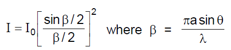

Interference of waves of intensity I1 and I2
resultant intensity,difference.
For Constructive Interference
For Destructive interference
If sources are incoherent
YDSE
where, fringe width
Here, = wavelength in medium
Highest order maxima
total number of maxima
Highest order minima
total number of minima
Intensity on screen
YDSE with two wavelengths 1& 2
The nearest point to central maxima where the bright fringes coincide
The nearest point to central maxima where the two dark fringes coincide,
Optical path difference
YDSE WITH OBLIQUE INCIDENCE
In YDSE, ray is incident on the slit at an inclination of 0to the axis of symmetry of the experimental set-up
We obtain central maxima at a point where,
This corresponds to the point O’ in the diagram. Hence we have path difference.
THIN-FILM INTERFERENCE
for interference in reflected light
for interference in transmitted light
Polarisation
Law of Malus
Optical activity
= rotation in length L at concentration C.
Diffraction
a sinwhere m = 1, 2, 3 ......
Linear width of central maxima
Angular width of central maxima =
Resolving power